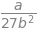
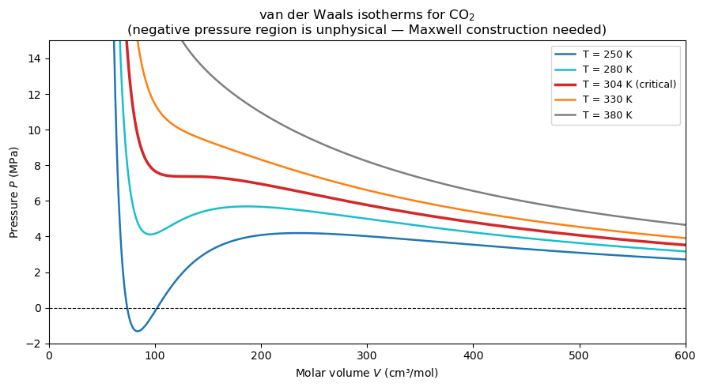

Chapter 17: Symbolic Mathematics with SymPy#
Topics Covered:
What symbolic math is and why it matters in ChE
Defining symbols and building expressions with SymPy
Simplification, expansion, and substitution
Symbolic calculus: differentiation, integration, and limits
Solving algebraic and differential equations
ChE application: van der Waals equation of state and Gibbs energy
lambdify: converting symbolic expressions to fast numerical functions
# ── All imports ──────────────────────────────────────────────────────────────
import sympy as sp
import numpy as np
import matplotlib.pyplot as plt
sp.init_printing(use_unicode=True) # pretty-print in Jupyter
17.1 Motivation: Symbolic vs Numerical Math#
In previous chapters, NumPy worked with numbers — floating-point approximations computed at runtime. SymPy works with symbols — exact mathematical objects that follow algebraic rules.
NumPy (numerical) |
SymPy (symbolic) |
|
|---|---|---|
Stores |
Floating-point numbers |
Exact expressions |
|
|
\(\sqrt{2}\) (exact) |
Derivative of \(x^3\) |
Not directly |
\(3x^2\) (exact) |
Integral of \(e^x\) |
Numerical only |
\(e^x + C\) (exact) |
Best for |
Large arrays, speed |
Derivations, exact answers |
When do ChE engineers need symbolic math? (examples)
Deriving analytical expressions for \(\frac{dP}{dT}\) or \(\frac{dC_p}{dT}\) from an equation of state
Integrating \(C_p(T)\) exactly rather than numerically
Solving the van der Waals equation for molar volume
Finding steady-state solutions to ODEs before simulating them
Verifying that a numerical answer has the right units and limiting behavior
import sympy as sp
sp.init_printing(use_unicode=True) # pretty-print in Jupyter
17.2 Symbols, Expressions, and Basic Operations#
17.2.1 Defining Symbols#
Everything in SymPy starts with sp.symbols(). A symbol is a named mathematical variable — it carries no numeric value until you assign one.
Single and multiple symbols:
x = sp.symbols('x') # single symbol
x, y, z = sp.symbols('x y z') # multiple — space-separated string
x, y, z = sp.symbols('x, y, z') # commas also work
x = sp.symbols('x')
x, y, z = sp.symbols('x y z')
#print(x, y, z)
x, y , z
Subscripts and Greek letters use LaTeX naming conventions:
x1, x2 = sp.symbols('x_1 x_2') # subscripts render as x₁, x₂
alpha, beta = sp.symbols('alpha beta') # Greek letters
T_inf = sp.symbols('T_inf') # renders as T∞
Assumptions tell SymPy the mathematical domain of a symbol, enabling correct simplifications:
T, P, V = sp.symbols('T P V', positive=True) # T, P, V > 0
n = sp.symbols('n', integer=True) # n ∈ ℤ
x = sp.symbols('x', real=True) # x ∈ ℝ (no complex branches)
x = sp.symbols('x', nonnegative=True) # x ≥ 0
Without assumptions, SymPy treats every symbol as a general complex number. With assumptions, simplifications like \(\sqrt{x^2} = x\) (valid only when \(x \geq 0\)) are applied automatically.
Assumption |
Domain |
Common effect |
|---|---|---|
|
\(x > 0\) |
\(\sqrt{x^2} \to x\); \(\ln x\) is real |
|
\(x \geq 0\) |
absorbs absolute values |
|
\(x \in \mathbb{R}\) |
avoids complex branches in trig/log |
|
\(x \in \mathbb{Z}\) |
simplifies modular and floor expressions |
|
\(x < 0\) |
sign-aware simplifications |
symbols vs Symbol: sp.symbols() is the convenience form for one or more variables at once. The lower-level sp.Symbol('x') creates a single symbol and is equivalent to sp.symbols('x'):
x = sp.Symbol('x', positive=True) # same as sp.symbols('x', positive=True)
17.2.2 Building Expressions#
Once you have symbols, you build expressions with ordinary Python operators. SymPy overloads +, -, *, /, ** to produce symbolic objects instead of numbers.
import sympy as sp
sp.init_printing(use_unicode=True)
# ── Single and multiple symbol definitions ────────────────────────────────────
x = sp.symbols('x')
x, y, z = sp.symbols('x, y, z')
a, b, c = sp.symbols('a b c')
print(x, y, z, a, b, c)
x y z a b c
# ── Subscripts and Greek letters ──────────────────────────────────────────────
x1, x2 = sp.symbols('x_1 x_2')
# ── Assumptions: effect on simplification ─────────────────────────────────────
x_gen = sp.symbols('x') # no assumption — general complex
x_pos = sp.symbols('x', positive=True) # x > 0
x_real = sp.symbols('x', real=True) # x ∈ ℝ
print(sp.sqrt(x_gen**2))
print(sp.sqrt(x_pos**2))
print(sp.sqrt(x_real**2))
sqrt(x**2)
x
Abs(x)
# ── Symbol vs symbols ─────────────────────────────────────────────────────────
T = sp.Symbol('T', positive=True) # single-symbol lower-level form
print("\nT is positive:", T.is_positive)
T is positive: True
Once you have symbols, you build expressions using standard Python operators — SymPy overloads +, -, *, /, ** to return symbolic objects.
x, a, b, c = sp.symbols('x a b c')
# ── Define expressions used below ────────────────────────────────────────────
Manipulating expressions:
Function |
What it does |
Example |
|---|---|---|
|
Distributes and multiplies out |
|
|
Factors into irreducibles |
|
|
Applies heuristics to reduce form |
|
|
Substitutes a value for a symbol |
|
|
Substitutes multiple values at once |
|
subs accepts both numeric values and other symbolic expressions — so you can evaluate at a number, substitute \(\pi\), or replace one symbol with another.
# ── Key operations ────────────────────────────────────────────────────────────
sp.expand((x+1)**10)
sp.factor(x**3 - x**2 - x +1)
sp.simplify((x**2-1)/(x-1))
expr1 = x**2 + 2*x + 1 # x = 3
expr1.subs(x, 3)
expr1.subs(x, sp.pi) # pi
x, a, b, c = sp.symbols('x a b c ')
expr2 = a*x**2 + b*x + c
#expr2
expr2.subs([(a, 1), (b, -3), (c, 2)])
sp.pi
import numpy as np
np.pi
17.2.3 Exact Arithmetic#
SymPy never rounds. Fractions stay as fractions, \(\pi\) stays as \(\pi\), and \(\sqrt{2}\) stays as \(\sqrt{2}\) until you explicitly ask for a decimal.
Exact numeric types:
Syntax |
What it creates |
Example |
|---|---|---|
|
Exact fraction \(p/q\) |
|
|
Exact square root, simplified |
|
|
Symbolic \(\pi\) |
stays as \(\pi\) in expressions |
|
Symbolic \(e\) (Euler’s number) |
stays as \(e\) in expressions |
|
Symbolic \(\infty\) |
used in limits and integrals |
|
Imaginary unit \(i\) |
|
# ── Exact arithmetic ─────────────────────────────────────────────────────────
print(1/3 + 1/6)
# print(1/3)
print(sp.Rational(1, 3) + sp.Rational(1, 6)) # 1/3
print(sp.sqrt(8), np.sqrt(8))
print(sp.pi)
print(sp.E)
0.5
1/2
2*sqrt(2) 2.8284271247461903
pi
E
Converting to decimals:
sp.N(expr) # evaluate to 15 significant figures (default)
sp.N(expr, n) # evaluate to n significant figures
expr.evalf() # same as sp.N(expr) — method form
expr.evalf(n) # same as sp.N(expr, n)
Both sp.N() and .evalf() do the same thing — sp.N is the function form, .evalf() is the method form. Neither modifies the original expression; they return a floating-point SymPy number (Float).
The key difference from Python’s built-in float arithmetic is that SymPy tracks exact values symbolically first and only converts to decimal when you ask:
1/3 + 1/6 # Python float: 0.5 (may accumulate rounding error)
sp.Rational(1,3) + sp.Rational(1,6) # SymPy: 1/2 (exact)
print("pi (50 digits):", sp.N(sp.pi)) # numerical to 50 sig figs
print("exp(1) numerical:", sp.N(sp.E, 15)) # 2.71828182845905
pi (50 digits): 3.14159265358979
exp(1) numerical: 2.71828182845905
17.3 Symbolic Calculus#
17.3.1 Differentiation#
sp.diff(expr, var) differentiates expr with respect to var. Pass an integer as a third argument for higher-order derivatives.
Syntax:
sp.diff(expr, x) # first derivative w.r.t. x
sp.diff(expr, x, 2) # second derivative (d²/dx²)
sp.diff(expr, x, n) # n-th derivative
x = sp.symbols('x')
print("d/dx [x^4] =", sp.diff(x**4, x))
print("d/dx [sin(x)] = ", sp.diff(sp.sin(x), x))
print("d/dx [exp(-x^2)] = ", sp.diff(sp.exp(-x**2), x))
print("d2/dx2 [sin(x)] = ", sp.diff(sp.sin(x), x, 2))
print("d3/dx3 [x^5] = ", sp.diff(x**5, x, 3))
d/dx [x^4] = 4*x**3
d/dx [sin(x)] = cos(x)
d/dx [exp(-x^2)] = -2*x*exp(-x**2)
d2/dx2 [sin(x)] = -sin(x)
d3/dx3 [x^5] = 60*x**2
For partial derivatives, just pass a different symbol — SymPy treats all other symbols as constants:
sp.diff(expr, T) # ∂expr/∂T (all other symbols held constant)
sp.diff(expr, V) # ∂expr/∂V
For mixed partial derivatives, chain the variables:
sp.diff(expr, x, y) # ∂²expr/∂x∂y
sp.diff(expr, x, 2, y) # ∂³expr/∂x²∂y
The result is always a new symbolic expression that can be simplified, substituted into, or passed to lambdify like any other SymPy expression.
# ── Partial derivatives ───────────────────────────────────────────────────────
T, V = sp.symbols('T V', positive=True)
R, a_vdw, b_vdw = sp.symbols('R a b', positive=True)
P_ideal = R*T / V
print('partial differentiation dP/dT=', sp.diff(P_ideal, T))
print('partial differentiation dP/dV=', sp.diff(P_ideal, V))
partial differentiation dP/dT= R/V
partial differentiation dP/dV= -R*T/V**2
17.3.2 Integration#
sp.integrate(expr, var) returns the indefinite integral (no constant of integration is shown but it is implied). For a definite integral, pass a tuple (var, lower, upper).
Syntax:
sp.integrate(expr, x) # indefinite integral w.r.t. x (+ C implied)
sp.integrate(expr, (x, a, b)) # definite integral from a to b
sp.integrate(expr, (x, 0, sp.oo)) # improper integral to ∞
Limits can be numeric, symbolic, or SymPy constants like sp.pi and sp.oo:
sp.integrate(sp.sin(x), (x, 0, sp.pi)) # definite: limits are sp.pi and 0
sp.integrate(sp.exp(-x), (x, 0, sp.oo)) # improper: upper limit is ∞
sp.integrate(f, (x, a, b)) # symbolic limits — result stays symbolic
For multiple integrals, chain the variable tuples:
sp.integrate(expr, (x, 0, 1), (y, 0, 1)) # ∫₀¹ ∫₀¹ expr dy dx
If SymPy cannot find a closed-form antiderivative, it returns the integral unevaluated as an Integral object rather than raising an error. You can then evaluate it numerically with .evalf().
x, T = sp.symbols('x T', positive=True)
sp.integrate(x**3, (x, 1, sp.pi))
sp.integrate(sp.sin(x)+sp.exp(-x)+x**3, x)
17.3.3 Limits#
The limit of a function \(f(x)\) as \(x\) approaches a point \(a\) is written:
One-sided limits approach \(a\) from one direction only:
The two-sided limit \(L\) exists if and only if both one-sided limits exist and are equal:
sp.limit(expr, var, point) evaluates the limit as var → point. Use sp.oo for \(\infty\) and pass '+' or '-' as a fourth argument for one-sided limits.
Syntax:
sp.limit(expr, x, point) # two-sided limit as x → point
sp.limit(expr, x, 0, '+') # one-sided limit from the right (x → 0⁺)
sp.limit(expr, x, 0, '-') # one-sided limit from the left (x → 0⁻)
sp.limit(expr, x, sp.oo) # limit as x → ∞
sp.limit(expr, x, -sp.oo) # limit as x → -∞
The point argument can be any numeric value, a symbolic expression, or a SymPy constant:
sp.limit(expr, x, 0) # x → 0
sp.limit(expr, x, sp.pi) # x → π
sp.limit(expr, x, sp.oo) # x → ∞
sp.limit(expr, x, a) # x → a (symbolic, result stays in terms of a)
If the two one-sided limits differ, sp.limit returns the right-hand limit by default. To check whether a limit exists, compare the '+' and '-' results explicitly.
x = sp.symbols('x')
print("lim x->0 sin(x)/x =", sp.limit(sp.sin(x)/x, x, 0))
print("lim x->0+ ln(x) =", sp.limit(sp.ln(x), x, 0, '+'))
# P = RT / (V-b) - a/V^2 as V-> oo
R_s, T_s, V_s, a_s, b_s = sp.symbols('R T V a b', positive=True)
P_vdw = R_s*T_s / (V_s - b_s) - a_s/V_s**2 # P(V)
P_limit = sp.limit(P_vdw*V_s / (R_s*T_s), V_s, sp.oo)
print("lim V-->oo PV/RT for van der Waals = ", P_limit)
lim x->0 sin(x)/x = 1
lim x->0+ ln(x) = -oo
lim V-->oo PV/RT for van der Waals = 1
17.4 Solving Equations#
17.4.1 Algebraic Equations with sp.solve#
Solving an algebraic equation means finding all values of \(x\) that satisfy:
For a single-variable polynomial of degree \(n\), there are at most \(n\) solutions (roots). The classic example is the quadratic equation:
For a system of equations in multiple unknowns, we seek \((x, y, \ldots)\) satisfying all equations simultaneously:
A unique solution exists when the number of independent equations equals the number of unknowns.
sp.solve(equation, variable) returns all symbolic solutions to equation = 0. Pass an sp.Eq(lhs, rhs) object or just the expression (SymPy assumes it equals zero).
Call |
Meaning |
|---|---|
|
Solve \(f(x) = 0\) for \(x\) |
|
Solve \(\text{lhs} = \text{rhs}\) for \(x\) |
|
Solve a system \(f_1 = 0,\; f_2 = 0\) |
x, y = sp.symbols('x y')
a, b, c = sp.symbols('a b c')
roots = sp.solve(a*x**2 + b*x + c, x)
roots
# x**2 - 5x + 6 = 0 --> x==2 and 3
sol_sp = sp.solve(x**2 -5*x + 6, x)
sol_np = np.roots([1, -5, 6])
print(sol_sp, sol_np)
[2, 3] [3. 2.]
# 2x + 3y = 7 -> eq1
# x - y = 1 -> eq2
eq1 = sp.Eq(2*x + 3*y, 7)
eq2 = sp.Eq(x - y, 1)
sol = sp.solve([eq1, eq2], [x, y])
print("system solution: ", sol)
sol1 = 2*sol[x] + 3*sol[y]
sol2 = sol[x] - sol[y]
print(sol1, sol2)
system solution: {x: 2, y: 1}
7 1
P, V, R_s, T_s, n = sp.symbols('P V R T n', positive=True)
ideal_gas = sp.Eq(P*V, n*R_s*T_s) # PV = nRT
V_sol = sp.solve(ideal_gas, V)
# print("Ideal gas V =", V_sol[0])
V_sol[0]
17.4.2 Ordinary Differential Equations with sp.dsolve –> Let’s revisit this later!#
sp.dsolve(ode, func) solves ordinary differential equations symbolically. You define the unknown function with sp.Function and write the ODE using func(x).diff(x).
This is useful for:
First-order decay / growth models (radioactive decay, first-order reactions)
Finding the analytical steady-state of a CSTR or batch reactor
Verifying numerical ODE solutions against exact answers
t, k = sp.symbols('t k', positive=True)
C = sp.Function('C') # C is the unknown function of t
# ── First-order reaction: dC/dt = -k*C ───────────────────────────────────────
ode1 = sp.Eq(C(t).diff(t), -k * C(t))
sol1 = sp.dsolve(ode1, C(t))
print("dC/dt = -kC → ", sol1)
# Apply initial condition C(0) = C0
C0 = sp.Symbol('C0', positive=True)
C1_const = sp.solve(sol1.rhs.subs(t, 0) - C0, sp.Symbol('C1'))[0]
C_exact = sol1.rhs.subs(sp.Symbol('C1'), C1_const)
print("With C(0)=C0 → C(t) =", C_exact)
# ── Second-order ODE: d²y/dx² + y = 0 (harmonic oscillator) ─────────────────
x = sp.symbols('x')
y = sp.Function('y')
ode2 = sp.Eq(y(x).diff(x, 2) + y(x), 0)
sol2 = sp.dsolve(ode2, y(x))
print("\nd²y/dx² + y = 0 → ", sol2)
# ── Energy balance ODE: dT/dt = (Q - UA(T-Tc)) / (m*Cp) ──────────────────────
# Simplified: dT/dt = alpha - beta*T (first-order linear)
T_f = sp.Function('T')
alpha, beta = sp.symbols('alpha beta', positive=True)
ode3 = sp.Eq(T_f(t).diff(t), alpha - beta*T_f(t))
sol3 = sp.dsolve(ode3, T_f(t))
print("\ndT/dt = α - βT → ", sol3)
print(" (steady state T_ss = α/β as t→∞ ✓)")
dC/dt = -kC → Eq(C(t), C1*exp(-k*t))
With C(0)=C0 → C(t) = C0*exp(-k*t)
d²y/dx² + y = 0 → Eq(y(x), C1*sin(x) + C2*cos(x))
dT/dt = α - βT → Eq(T(t), C1*exp(-beta*t) + alpha/beta)
(steady state T_ss = α/β as t→∞ ✓)
17.5 ChE Application: van der Waals Equation of State#
The van der Waals equation corrects the ideal gas law for molecular volume (\(b\)) and intermolecular attractions (\(a\)):
This is a cubic equation in \(V\) — it has up to three real roots, corresponding to liquid, two-phase, and vapor states. SymPy can:
Rearrange it into cubic form
Solve analytically for \(V\)
Compute \(\left(\frac{\partial P}{\partial V}\right)_T\) for spinodal and critical-point analysis
Find the critical point where \(\frac{\partial P}{\partial V} = \frac{\partial^2 P}{\partial V^2} = 0\)
P, V, T_s, R_s, a_s, b_s = sp.symbols('P V T R a b', positive=True)
P_vdw = R_s*T_s / (V - b_s) - a_s / V**2
#print("P(V)=", P_vdw)
V_solutions = sp.solve(P_vdw - P, V)
V_solutions
dPdV = sp.diff(P_vdw, V)
dPdV
d2PdV2 = sp.diff(P_vdw, V, 2)
d2PdV2
V_c, T_c = sp.symbols('V_c, T_c', positive=True)
crit_eq1 = dPdV.subs([(V, V_c), (T_s, T_c)])
crit_eq2 = d2PdV2.subs([(V, V_c), (T_s, T_c)])
# print(crit_eq1, crit_eq2)
crit_sol = sp.solve([crit_eq1, crit_eq2], [V_c, T_c])
crit_sol
P_c = P_vdw.subs([(V, crit_sol[0][0]), (T_s, crit_sol[0][1])])
P_c

print(crit_sol, P_c)
[(3*b, 8*a/(27*R*b))] a/(27*b**2)
17.5.1 Plotting the van der Waals P–V Isotherm#
Using the symbolic expression and lambdify, we can plot isotherms for CO\(_2\) (\(a = 0.3658\) J·m³/mol², \(b = 4.286\times10^{-5}\) m³/mol) and visualize the phase transition region.
import numpy as np
import matplotlib.pyplot as plt
# CO2 van der Waals constants
a_co2 = 0.3658 # J·m³/mol²
b_co2 = 4.286e-5 # m³/mol
R_val = 8.314 # J/(mol·K)
T_c_co2 = 8 * a_co2 / (27 * R_val * b_co2) # ≈ 304 K (critical temp)
# Convert symbolic P_vdw → fast numerical function
P_num = sp.lambdify((V, T_s, R_s, a_s, b_s), P_vdw, 'numpy')
V_arr = np.linspace(1.1*b_co2, 6e-4, 2000) # m³/mol
fig, ax = plt.subplots(figsize=(9, 5))
for T_val, color in zip([250, 280, T_c_co2, 330, 380],
['tab:blue', 'tab:cyan', 'tab:red', 'tab:orange', 'tab:gray']):
P_arr = P_num(V_arr, T_val, R_val, a_co2, b_co2) / 1e6 # Pa → MPa
label = f'T = {T_val:.0f} K' + (' (critical)' if abs(T_val - T_c_co2) < 1 else '')
lw = 2.5 if abs(T_val - T_c_co2) < 1 else 1.8
ax.plot(V_arr * 1e6, P_arr, color=color, linewidth=lw, label=label) # V in cm³/mol
ax.axhline(0, color='k', linewidth=0.8, linestyle='--')
ax.set_xlim(0, 600); ax.set_ylim(-2, 15)
ax.set_xlabel('Molar volume $V$ (cm³/mol)')
ax.set_ylabel('Pressure $P$ (MPa)')
ax.set_title('van der Waals isotherms for CO$_2$\n(negative pressure region is unphysical — Maxwell construction needed)')
ax.legend(fontsize=9)
plt.tight_layout()
plt.show()
print(f"CO₂ critical temperature: T_c = {T_c_co2:.1f} K ({T_c_co2-273.15:.1f} °C)")
print(f"CO₂ critical pressure: P_c = {a_co2/(27*b_co2**2)/1e6:.2f} MPa")

CO₂ critical temperature: T_c = 304.2 K (31.0 °C)
CO₂ critical pressure: P_c = 7.38 MPa
17.6 lambdify: Bridging SymPy and NumPy#
The key workflow: derive symbolically → convert to a fast numerical function with lambdify → evaluate or plot.
SymPy expressions are symbolic objects — they cannot be evaluated on NumPy arrays directly. sp.lambdify converts a symbolic expression into a regular Python function backed by NumPy (or any other numerical library), giving you the best of both worlds: symbolic derivation + numerical speed.
f_num = sp.lambdify(variables, expression, 'numpy')
Argument |
Description |
|---|---|
|
Symbol or tuple of symbols — become function arguments |
|
Any SymPy expression |
|
Backend: |
Typical workflow:
Define symbols and derive the expression symbolically (e.g., take a derivative, integrate, simplify)
Call
lambdifyto get a fast numerical functionEvaluate on arrays, plot, or pass to a solver
Syntax examples — single variable, multiple variables, and scalar evaluation:
# Single variable
f_num = sp.lambdify(x, expr, 'numpy') # f_num(x_val)
# Multiple variables — pass a tuple
g_num = sp.lambdify((x, y), expr, 'numpy') # g_num(x_val, y_val)
# Evaluate at a scalar
f_num(2.0) # returns a float
# Evaluate on a NumPy array (vectorized automatically)
x_arr = np.linspace(0, 10, 500)
f_num(x_arr) # returns an array
The backend argument controls which library is used under the hood:
Backend |
When to use |
|---|---|
|
Default — arrays, plotting |
|
Scalar-only (no arrays) |
|
When the expression uses special functions (e.g. |
import numpy as np
import matplotlib.pyplot as plt
import sympy as sp
x = sp.symbols('x')
# ── Step 1: derive symbolically ───────────────────────────────────────────────
f_sym = sp.sin(x) * sp.exp(-x / 3) # sinx + exp(-x/3)
f_sym
f_num = sp.lambdify(x, f_sym, 'numpy')
f_num
<function _lambdifygenerated(x)>
f_num(np.array([1,2,3]))
array([0.60294031, 0.46684887, 0.05191515])
def f_numpy(x):
return np.sin(x) + np.exp(-x/3)
17.7 Summary#
Concept |
SymPy tool |
Example |
|---|---|---|
Define symbols |
|
Variables with assumptions |
Exact arithmetic |
|
\(\frac{1}{3} + \frac{1}{6} = \frac{1}{2}\) exactly |
Expand |
|
\((x+1)^3 \to x^3 + 3x^2 + 3x + 1\) |
Factor |
|
\(x^2 - 1 \to (x-1)(x+1)\) |
Simplify |
|
Cancel, trig identities, etc. |
Substitute |
|
Plug in a value or another symbol |
Differentiate |
|
\(n\)-th derivative w.r.t. \(x\) |
Integrate |
|
Indefinite; |
Limit |
|
\(\lim_{x\to 0}\frac{\sin x}{x} = 1\) |
Solve algebraic |
|
Roots, quadratic formula, systems |
Solve ODE |
|
Analytical solution with constant \(C_1\) |
Numerical eval |
|
\(\pi\) to 50 digits |
Vectorize |
|
SymPy → NumPy-compatible function |
Golden rule: Use SymPy to derive — exact formulas, derivatives, integrals, and solutions. Use NumPy/SciPy to compute — fast array operations, plotting, and numerical solvers. Connect the two with lambdify.
ChE use cases covered:
\(\partial P / \partial T\) and \(\partial P / \partial V\) from the ideal gas and van der Waals EOS
Exact \(\Delta H = \int C_p\, dT\) from a polynomial fit
Critical point \((V_c, T_c, P_c)\) of van der Waals gas from \(\nabla P = 0\)
First-order reaction \(dC/dt = -kC\) solved analytically
Reactor energy balance ODE solved to find steady-state temperature